配置WAF规则集的具体操作如下：
| 步骤1 | 选择 ，激活“规则集管理”页签。 |
| 步骤2 | 添加规则集。 |
1）点击“添加”，弹出“添加”对话框，在对话框中配置规则名称并选择策略模板，如下图所示。
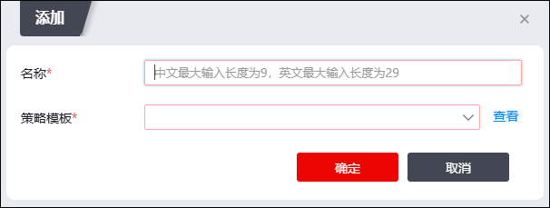
配置完成后，点击【确定】，界面中出现一条新的WAF规则集，如下图所示。
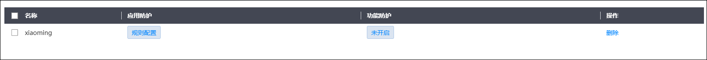
| 步骤3 | 配置应用防护规则。 |
1）点击规则集“应用防护”列中的【规则配置】，弹出界面如下图所示。
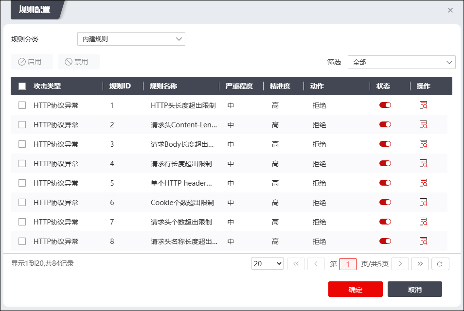
在设置规则集时，各项参数的具体说明如下表所示。
参数 |
说明 |
|---|---|
规则分类 |
在下拉框中选择规则集的规则分类，可选项：内建规则、核心规则、应用规则。 |
攻击类型 |
规则分类设置为“规则分类”时可设置攻击类型。 |
规则配置 |
勾选攻击类型前的复选框，选择攻击防御类型；点击“状态”列开关设置是否启用相应规则；点击“操作”列的“”，在弹出的“查看”对话框中，启用规则然后设置防御动作。可选防御动作包括： Ø告警：继续匹配下一条规则，判断对该访问请求进行的动作，访问请求记录到攻击日志中。 Ø继续：继续匹配下一条规则，判断对该访问请求进行的动作，访问请求不记录到攻击日志中。 Ø放行：允许本次访问请求，忽略后续的所有的规则，并将访问请求记录到攻击日志中。 Ø拒绝：拒绝本次访问请求，将访问记录到攻击日志中。 Ø拒绝不记录日志：拒绝本次访问请求，访问请求不记录到日志中。 Ø临时跳转：由本次请求页面临时跳转到新的页面中，将访问请求记录到攻击日志中，再次接收到访问请求时，继续访问当前请求页面。 Ø永久跳转：由本次请求页面临时跳转到新的页面中，将访问请求记录到攻击日志中，再次接收到访问请求时，将访问新的页面。 Ø错误页面：返回错误页面并记录攻击日志，关于错误页面的配置具体请参见 登录页面。 |
| 步骤4 | 配置功能防护 |
1）点击规则集“功能防护”列中的蓝色按钮，弹出界面如下图所示。
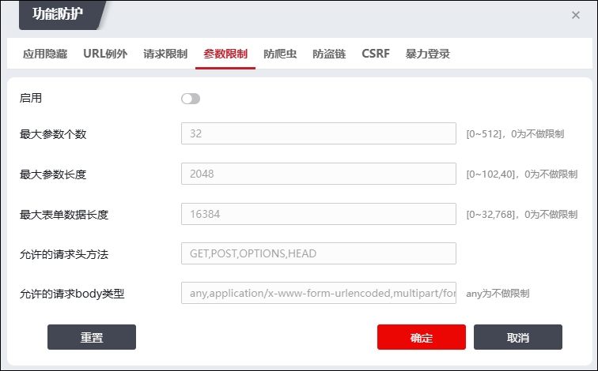
|
²功能防护页面的每个子页面的开关配置是独立的，无需多次点击【确定】按钮保存单个界面内的配置。 |

Ø应用隐藏
NGFW支持替换错误页面，从而进行返回码隐藏。当服务器返回配置的返回码时，NGFW会将其替换为配置后的错误页面，以此来防止返回码造成的信息泄露；此处需配置替换错误界面的种类（4xx，5xx），界面如下图所示：
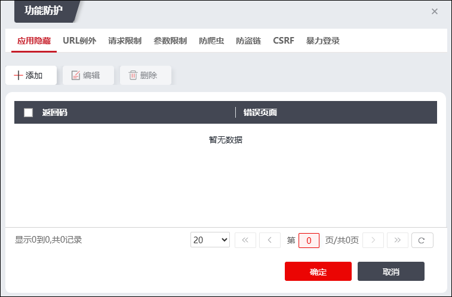
ØURL例外
URL例外用于对特定的URL单独配置防护策略，而不使用安全策略中的默认值。激活“URL例外”页签，界面如下图所示。管理员可以在当前界面启用/关闭URL例外功能，也可以对已配置的URL例外项进行管理。
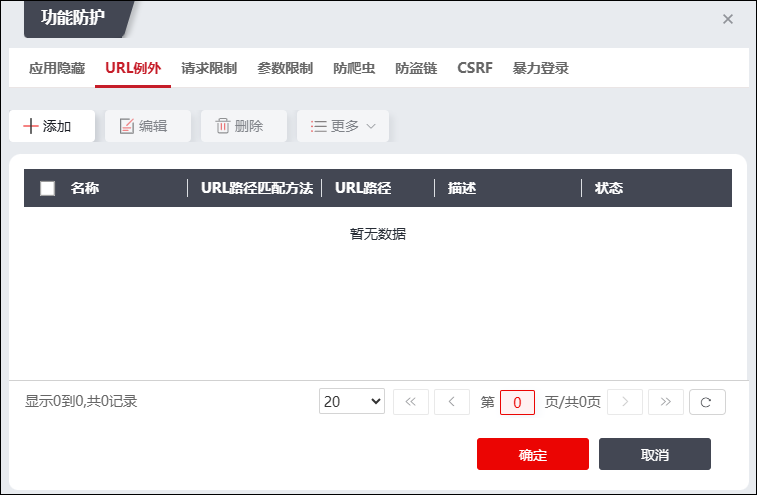
点击“添加”，在弹出界面中配置URL例外项，界面如下图所示。
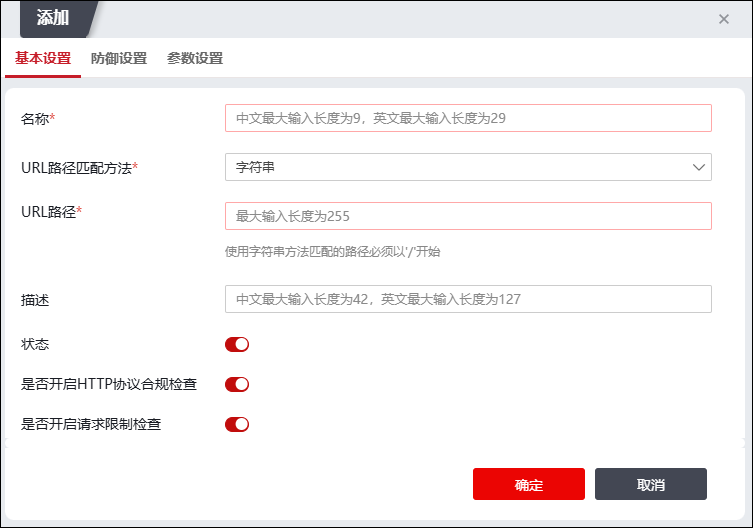
在配置URL例外项时，各项参数的具体说明如下表所示。
参数 |
描述 |
|---|---|
名称 |
必填项，配置当前URL例外项的名称。最多可输入9个中文字符，最多可输入29个英文字符。 |
URL路径匹配方法 |
设置URL地址的类型。可选项：字符串、正则。 字符串类型：URL指通过单个字符串来描述一个URL路径； 正则类型：URL指通过单个字符串来描述一系列符合某个语法规则的URl路径。 |
URL路径 |
必填项，设置NGFW所保护的某个网站地址。 字符串格式：以单斜线“/”开头的字符串，如“/index.htm”； 正则表达式：使用正则表达式表达路径系列。 |
描述 |
设置URL例外策略的描述信息。 |
状态 |
设置是否启用该URL例外。 |
是否开启HTTP协议合规检查 |
设置是否启用HTTP报文协议合规功能。默认为“”，表示关闭，点击该按钮将显示“ |
是否开启请求限制检查 |
设置是否启用请求限制检查功能。 |

Ø请求限制
请求限制是对HTTP头部的各个字段做合规性的限制。激活“请求限制”页签，界面如下图所示。
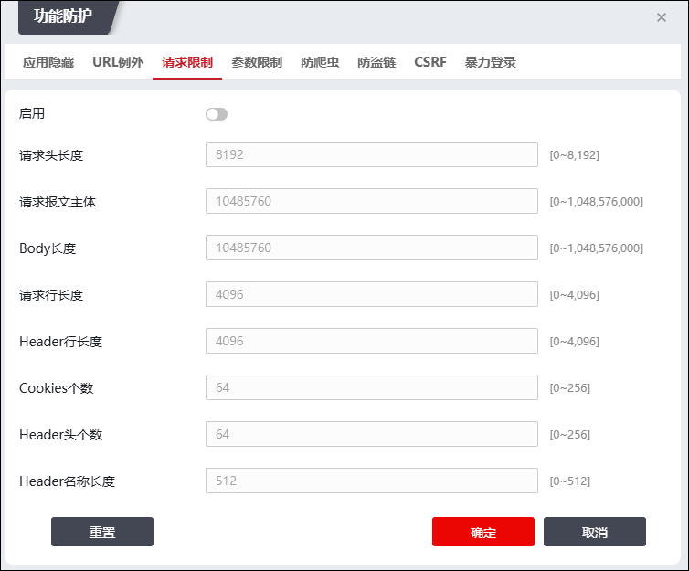
配置请求限制时，各项参数的具体说明如下表所示。
参数 |
说明 |
|---|---|
启用 |
设置是否启用HTTP报文协议合规功能。默认为“”，表示关闭，点击该按钮将显示“ |
请求头长度 |
设置HTTP请求报文中起始行和首部的最大长度，单位：字节；取值范围：0-8192；默认值：8192。 |
请求报文主体 |
设置HTTP请求报文主体的最大长度，单位：字节；取值范围：0-1048576000；默认值：10485760。 |
Body长度 |
当HTTP请求报文中无 Content_Length参数时，可使用该参数限制报文主体的最大长度，单位：字节；取值范围：0-1048576000；默认值：10485760。 |
请求行长度 |
配置HTTP报文请求行的最大长度，单位：字节；取值范围：0-4096；默认值：4096。 |
Header行长度 |
设置HTTP请求首部每行“名称：取值”的最大长度，单位：字节；取值范围：0-4096；默认值：4096。 |
Cookies个数 |
设置保存的最大Cookies个数，取值范围：0-256；默认值：64。 |
Header头个数 |
配置HTTP请求首部“名称：取值”最大个数，取值范围：0-256；默认值：64。 |
Header名称长度 |
设置HTTP请求首部名称的最大长度，取值范围：0-512；默认值：512。 |
Ø参数限制
参数限制功能可以根据不同的参数对客户端发起的请求进行过滤，对其中的参数进行合法性检查，提高Web应用系统的安全性。激活“参数限制”页签，界面如下图所示。
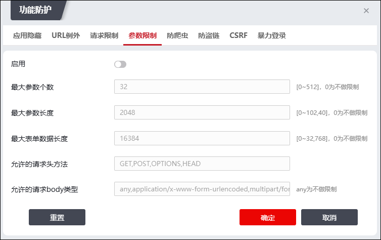
配置参数限制时，各项参数的具体说明如下图所示。
参数 |
说明 |
|---|---|
启用 |
设置是否启用参数限制策略。默认为“”，表示关闭，点击该按钮将显示“ |
最大参数个数 |
设置用户提交表单参数的最大个数。取值范围：0-512；默认值：32。0表示不限制。 |
最大参数长度 |
设置用户提交的每个表单参数的最大长度，单位：字节；取值范围：0-10240字节；默认值：2048。0表示不限制。 |
最大表单数据长度 |
设置用户提交的每个表单数据POST请求主体的最大长度，单位：字节；取值范围：0-32768字节；默认值：16384。0表示不限制。 |
允许的请求头方法 |
选择允许的请求头方法。在下拉框中选择请求头方法，支持多选。 |
允许的请求body类型 |
设置请求报文中允许的文件类型，支持Mime类型，输入值后点击【添加】按钮完成设置。 |
Ø防爬虫
NGFW提供抵御恶意机器人访问其所保护Web服务器的爬虫防御功能。激活“防爬虫”页签，界面如下图所示。
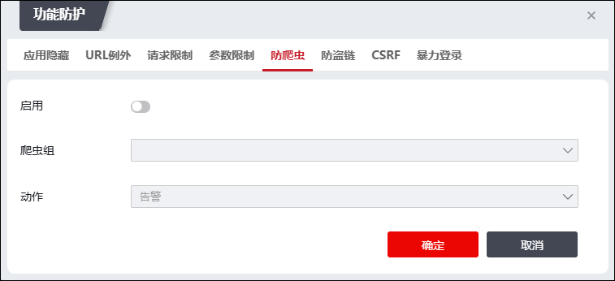
配置防爬虫时，各项参数的具体说明如下表所示。
参数 |
说明 |
|---|---|
启用 |
设置是否启用防爬虫策略。默认为“”，表示关闭，点击该按钮将显示“ |
爬虫组 |
选择已定义的爬虫组，或者在下拉列表中点击『新建』创建新的爬虫组。 |
动作 |
设置NGFW对User-Agent字段命中爬虫组的HTTP请求报文执行的操作。可选项：告警、拒绝、拒绝不记录日志、临时跳转、永久跳转、错误页面。 1）告警：生成报警信息，并继续匹配后续策略确认是否放行该HTTP请求报文。 2）拒绝：拒绝HTTP请求报文并记录日志。 3）拒绝不记录日志：拒绝HTTP请求报文但不记录日志。 4）临时跳转：重定向并记录日志，将HTTP访问请求重定向到其它特定网站，但新的HTTP访问请求发起时仍旧访问原网站。 5）永久跳转：重定向并记录日志，将HTTP访问请求重定向到其它特定网站，新的HTTP访问请求发起时，直接访问重定向之后的网站。 6）错误页面：返回错误页面并记录日志。 说明： HTTP请求报文命中爬虫防护策略产生的报警和日志信息均显示在“监控>日志查看>WAF攻击日志”界面，关于策略日志的查看具体请参见 日志查看。 |
Ø防盗链
防盗链是防止第三方通过一些技术手段绕过本站的资源展示页面，盗用本站的资源，让绕开本站资源展示页面的资源链接失效的技术。开启防盗链功能后，因为屏蔽了那些盗链的间接资源请求，从而可以大大减轻服务器及带宽的压力。激活“防盗链”页签，界面如下图所示。
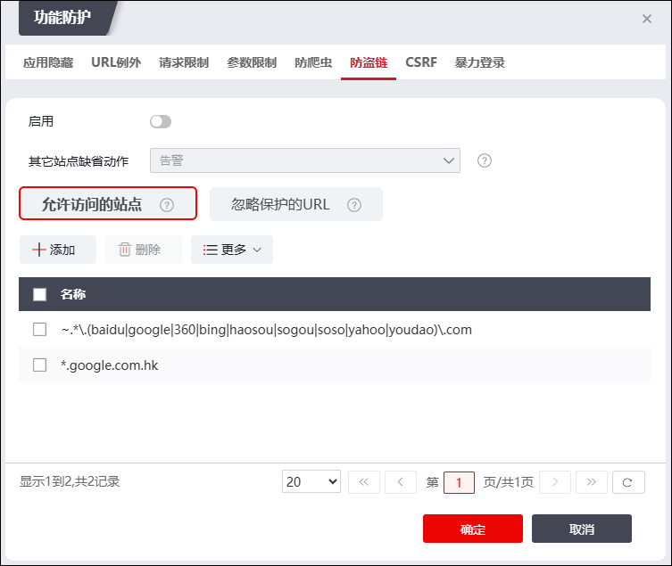
配置防盗链时，需要配置如下表两个方面。
参数 |
说明 |
|---|---|
允许访问的站点 |
添加允许访问的站点host地址，NGFW将不对该站点进行防盗链防护。点击【添加】按钮，在弹出窗口中配置允许访问的站点。站点的地址格式支持普通形式（可含有通配符“*”），正则表达式形式（以“~”起始的正则表达式字符串）。 例如： “www.baidu.com”，表示允许来自百度地址的访问； “*.baidu.com”表示运行来自百度所有域名的访问； https://www.baidu.com 表示只允许来自百度https安全站点的访问； “www\.(google|baidu)\.com”，正则表达式形式，表示允许来自www.google.com或www.baidu.com站点的访问。 |
忽略保护的URI路径 |
添加忽略保护的URI地址，不对该地址进行防盗链保护。点击【添加】按钮，在弹出窗口中配置允许访问的站点。站点的地址格式支持普通形式（可含有通配符“*”），正则表达式形式（以“~”起始的正则表达式字符串）。 |
ØCSRF
CSRF（Cross-site request forgery，跨站请求伪造）攻击，指攻击者利用网站对合法用户的网页浏览器的信任，劫持用户当前已登录的Web应用程序的会话，迫使用户浏览器将伪造的HTTP请求（包括该用户的会话Cookie和其他认证信息）发送到已登录的Web应用程序，执行非用户本意的操作。NGFW支持CSRF攻击防护。
激活“CSRF”页签，再点击“添加”，界面如下图所示。
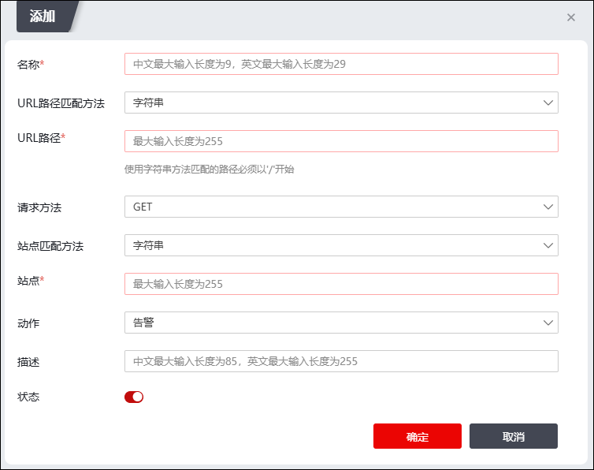
配置CSRF时，各项参数的具体说明如下表所示。
参数 |
描述 |
URL路径匹配方法 |
设置URL地址的类型。可选项：字符串、正则；默认值：字符串。 字符串类型URL指通过单个字符串来描述一个URL路径； 正则类型URL指通过单个字符串来描述一系列符合某个语法规则的URL路径。 |
URL路径 |
配置NGFW保护的URL路径。 |
请求方法 |
设置客户端向Web服务器获取资源的方式，可选项：GET、POST、GET|POST；默认值：GET。 “GET”用于客户端从服务器获取某个资源； “POST”用于客户端向服务器发送表单数据； “GET|POST”表示包括GET和POST。 |
站点匹配方法 |
设置NGFW检查用户字段的方法，可选项：字符串、正则；默认值：字符串。 “字符串”指CSRF策略与HTTP请求报头中的站点字段值完全相同，HTTP请求报文才命中该策略； “正则”指HTTP请求报头中的字段符合“Referer正则”定义的规则，则HTTP请求报文命中该策略。 |
站点 |
配置基准站点值。 |
动作 |
设置CSRF策略与HTTP请求报头的Referer/Token字段值不匹配时，NGFW对该HTTP请求报文所执行的操作。可选项：告警、拒绝、拒绝不记录、临时跳转、永久跳转、错误页面。 1）告警：生成报警信息，并继续匹配后续策略确认是否放行该HTTP请求报文。 2）拒绝：拒绝HTTP请求报文并记录日志。 3）拒绝不记录：拒绝HTTP请求报文但不记录日志。 4）临时跳转：重定向并记录日志，将HTTP访问请求重定向到其它特定网站，但新的HTTP访问请求发起时仍旧访问原网站。 5）永久跳转：重定向并记录日志，将HTTP访问请求重定向到其它特定网站，新的HTTP访问请求发起时，直接访问重定向之后的网站。 6）错误页面：返回错误页面并记录日志。 说明： HTTP请求报文命中CSRF防护策略产生的报警和日志信息均显示在“监控>日志查看>WAF攻击日志”，关于攻击日志的查看具体请参见 日志查看。 |
描述 |
输入对CSRF策略简单的描述信息。 |
状态 |
设置是否启用该CSRF规则。 |
Ø暴力登录
所谓暴力登录就是攻击者无限次尝试用户名和密码，试图登录网站。如果不对密码认证失败做次数和时间限制，密码肯定会被尝试出来，这样就极大的增加了网站的风险。为了防止对网站使用尝试猜解用户名和密码的攻击，TopWAF对暴力登录做了策略限制，用户可以定义统计周期内用户名和密码的失败次数，以限制暴力登录攻击，提高网站的安全性。
激活“暴力登录”页签，界面如下图所示。
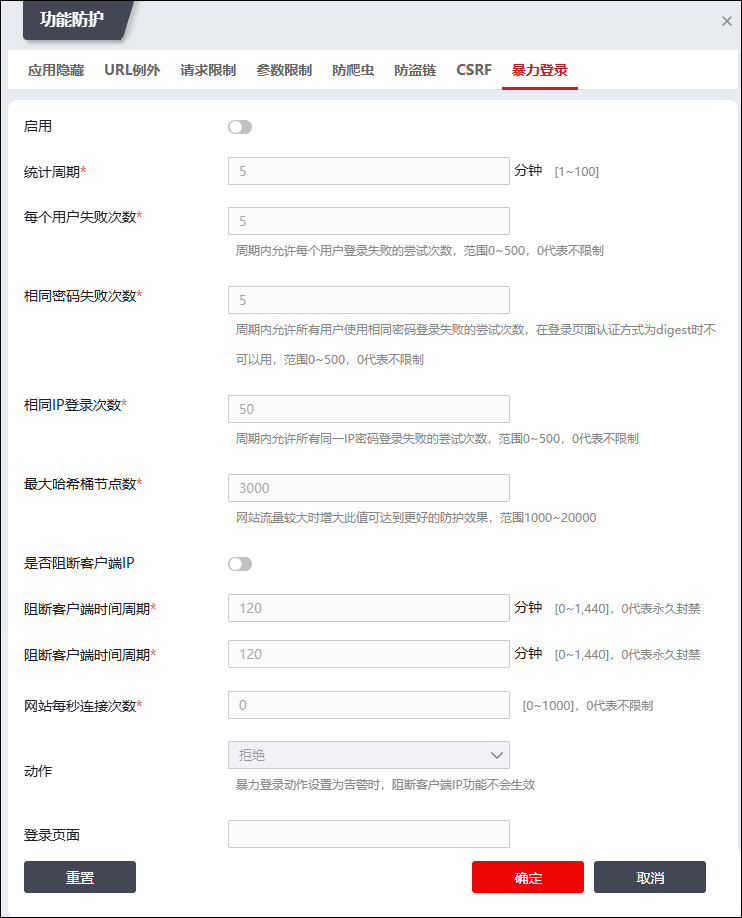
配置暴力登录规则时，各项参数的具体说明如下表所示。
参数 |
描述 |
启用 |
设置是否启用暴力登录防护功能。只有启用暴力登录防护策略才能在安全策略中生效。 |
统计周期 |
设置统计用户登录信息的周期。范围：1-100；单位：分钟。默认值：5。 |
每个用户失败次数 |
设置周期内允许用户登录失败的尝试次数，范围：0-500，0代表不限制，默认值：5。 |
相同密码失败次数 |
周期内允许所有用户使用相同密码登录失败的尝试次数，在登录页面认证方式为digest时不可用，范围0-500，0代表不限制，默认值：5。 |
相同IP登录次数 |
周期内允许所有同一IP密码登录失败的尝试次数，范围0-500，0代表不限制。默认值：50。 |
最大哈希桶节点数 |
设置最大哈希桶数。当网站流量较大时，增大此值可达到更好的防护效果，范围1000-20000。默认值：3000。 |
是否阻断客户端IP |
设置是否启用客户端IP阻断功能。 |
阻断客户端时间周期 |
阻断有暴力破解行为客户端的时间。单位：分钟；取值范围：0-1440；0代表永久封禁。 |
网站每秒连接次数 |
网站每秒允许的连接次数，取值范围：0-1000,0代表不限制。 |
动作 |
设置TopWAF对暴力登录动作执行的操作。可选项：告警、拒绝、拒绝不记日志、临时跳转、永久跳转、错误页面。 1）告警：生成报警信息，并继续匹配后续策略确认是否放行该HTTP请求报文。暴力登录动作设置为告警时，阻断客户端IP功能不会生效。 2）拒绝：拒绝HTTP请求报文并记录日志。 3）拒绝不记录日志：拒绝HTTP请求报文但不记录日志。 4）临时跳转：重定向并记录日志，表示将HTTP访问请求重定向到其它特定网站，但新的HTTP访问请求发起时仍旧访问原网站。 5）永久跳转：重定向并记录日志，表示将HTTP访问请求重定向到其它特定网站，新的HTTP访问请求发起时，直接访问重定向之后的网站。 6）错误页面：返回错误页面并记录攻击日志，关于错误页面的配置具体请参见 登录页面。 说明： HTTP请求报文命中暴力登录防护策略产生的报警和日志信息均显示在“监控>日志查看>WAF攻击日志”菜单，关于攻击日志的查看具体请参见 日志查看。 |
跳转页面 |
处理动作设置为“临时跳转”、“永久跳转”时，该参数有效。 “动作”参数设置为临时跳转/永久跳转时，设置重定向的目标URL地址，例如http://www.topsec.com.cn。 |
登录页面 |
处理动作设置为“错误页面”时，该参数有效，设置已定义的错误页面，关于错误页面的定义具体请参见 登录页面。 |
| 步骤5 | 搜索规则集，搜索已添加的WAF规则集。 |
1）点击“ ”，弹出“规则搜索”对话框，如下图所示。
”，弹出“规则搜索”对话框，如下图所示。
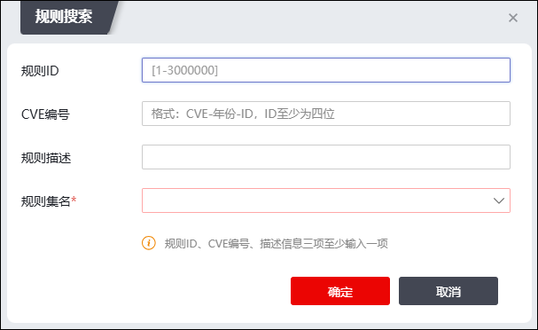
2）填写关键字，点击【确定】按钮，完成规则集搜索。